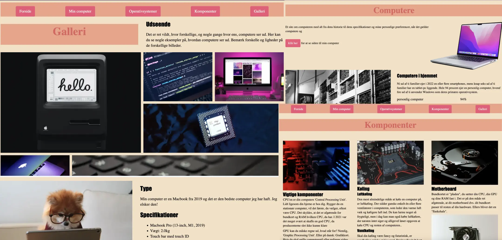

Studiestartsprøve
HTML & CSS
Om Projektet
I dette tema lærte man de grundlæggende elementer inden for webudvikling. Man fik praktisk erfaring med at organisere indhold ved hjælp af HTML og style det visuelt med CSS. Projektet gav mig indsigt i semantisk markup og processen for at skabe en responsiv hjemmeside fra bunden.
Læringsmål:
- Forståelse af HTML-struktur og elementer
- Anvendelse af CSS til styling og layout
- Oprettelse af en simpel, responsiv webside
- Brug af semantiske tags for bedre tilgængelighed
Studiestartsprøve
Alt vi har lært i uge 1-2 fik vi den vores Studiestartsprøve, hvor vi har arbejdet videre på mobilsitet og sørget for, at det nu også fungerer på desktop. Indholdet på siden er struktureret efter det udleverede wireframe og layoutdiagram. Jeg har lavet et website, der består af fem sider, som følger det udleverede wireframe. Jeg har tilføjet farver og anvendt to forskellige skrifttyper. Layoutet følger det udleverede layoutdiagram. Jeg havde det ret svært og komme igang, da jeg ikke forstod grids. Det tog tid, men jeg fik klaret det.
Processen
Uge 1-2: Grundlæggende forberedelse
Op til vores Studiestarsprøve startet vi med de helt basale ting før vi overhovedet lærte og kodet. Vi lærte at det var bedst og lave en struktur mappe til alle de koder vi kommer til at lære i det første semester og bare resten af vores uddannelse. Derefter fik vi præsenteret HTML og CSS hvordan de forskellige elementer fungerer og hvordan man kan style dem med CSS. Da vi så fik det basis skulle vi lave vores mobilesite. Den første opgave var at oprette en mobilesite, hvor vi skulle indsætte det indhold, som lærerne allerede havde forberedt.
Uge 2-3: Grids & Semantik
Herefter begyndte vi at lære om wireframes og grids. Wireframes er gode til at planlægge både layout og funktionalitet af en hjemmeside, inden man går i gang med kodningen. Grids hjælper med at skabe en struktureret opbygning af sideelementerne. Oveni alt det, lærte vi Semantik. Vi lærte at bruge de rigtige HTML-tags for at gøre vores kode mere forståelig og tilgængelig for både brugere og søgemaskiner.